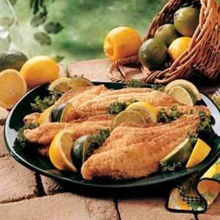

Golden Catfish Fillets
What is Golden Catfish Fillets?
Golden fried catfish can be a great starter for dinners. You can make it quickly at home and it tastes delicious. The golden fried catfish is tender inside and crispy outside.
Ingredients
1 egg white
1 cup milk
1 cup cornmeal
3/4 teaspoon salt
1/4 teaspoon garlic powder
1/4 to 1/2 teaspoon cayenne pepper
1/8 teaspoon pepper
4 catfish fillets (8 ounces each)
Canola oil
Lemon or lime wedges, optional
Instructions / How to Cook
1. In a shallow bowl, beat the egg white until foamy; add milk and mix well. In another shallow bowl, combine the cornmeal, salt, garlic powder, cayenne and pepper. Dip fillets in milk mixture, then coat with cornmeal mixture.
2. Heat 1/4 in of oil in a large skillet; fry fish over medium-high for 3-4 minutes on each side or until it flakes easily with a fork. Garnish with lemon or lime if desired.